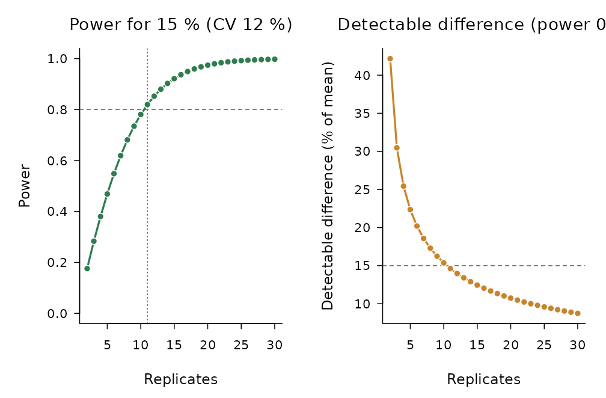
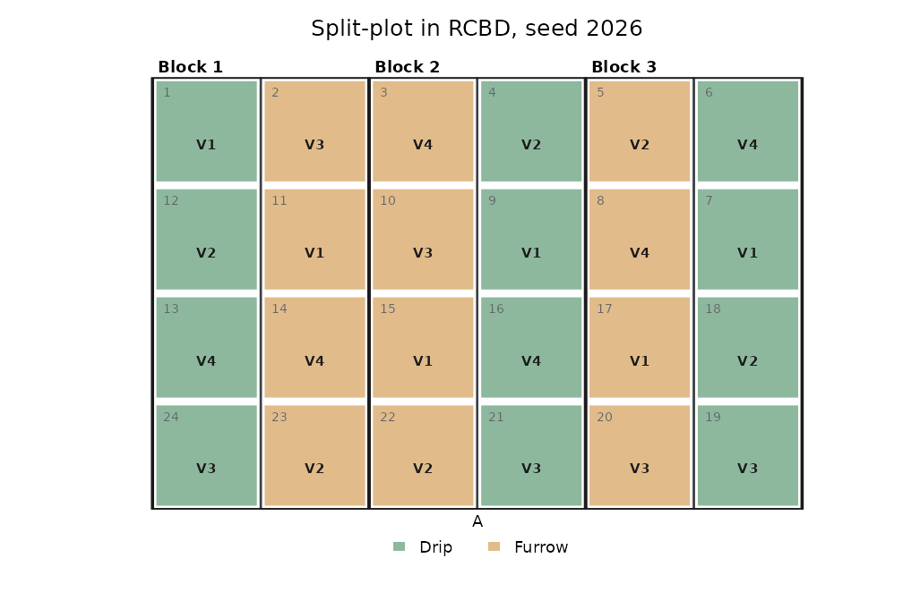
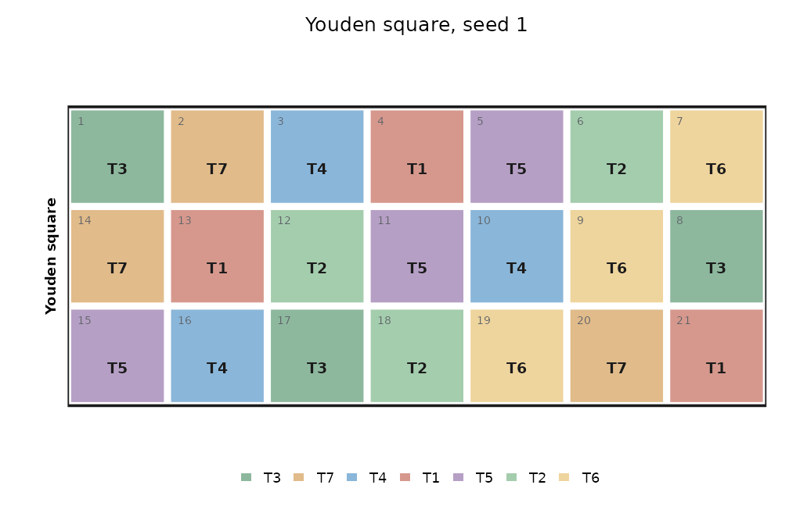

Before the trial: how many replicates, which design, and where each treatment goes in the field.
How many replicates?
The number of replicates depends on the coefficient of variation
expected (take it from earlier trials of the same crop and site) and on
the smallest difference worth detecting. power_design()
uses the noncentral t distribution with the error degrees of freedom of
the design:
pw <- power_design(cv = 12, diff = 15, t = 6, design = "rcbd")
pw
#>
#> Replicates to detect a difference of 15 % of the mean (CV 12 %, 6 treatments, RCBD, alpha 0.05, power 0.8)
#> Replicates needed: 11 (error df 50)
#>
#> Replicates Error df Power Detectable diff. (%)
#> 2 5 0.176 42.2
#> 3 10 0.283 30.5
#> 4 15 0.380 25.4
#> 5 20 0.469 22.4
#> 6 25 0.548 20.2
#> 7 30 0.619 18.6
#> 8 35 0.681 17.3
#> 9 40 0.735 16.2
#> 10 45 0.781 15.4
#> 11 50 0.820 14.6
#> 12 55 0.853 14.0
#> 13 60 0.880 13.4
#> 14 65 0.903 12.9
#> 15 70 0.922 12.4
#> 16 75 0.937 12.0
#>
#> Halving the CV is worth as much as quadrupling the replicates.
plot(pw)
Halving the coefficient of variation is worth as much as quadrupling the replicates: uniform land, plots of the right size, border rows and blocks laid across the gradient are usually cheaper than more plots.
Randomising the layout
make_design() randomises sixteen designs.
designs("layout") lists them with the arguments each one
needs, its conditions and the design of design_anova() that
analyses its field book:
designs("layout")[, c("id", "name", "needs", "analyse_as")]
#> id name
#> 1 crd Completely randomised design (CRD)
#> 2 rcbd Randomised complete block design (RCBD)
#> 3 latin Latin square
#> 4 fact_crd Factorial in CRD
#> 5 fact_rcbd Factorial in RCBD
#> 6 split_rcbd Split-plot in RCBD
#> 7 strip Strip-plot (split-block) in RCBD
#> 8 splitsplit Split-split-plot in RCBD
#> 9 ibd Resolvable incomplete blocks (random blocks of size k within replicates)
#> 10 augmented Augmented design (checks in every block + unreplicated entries)
#> 11 graeco Graeco-Latin square
#> 12 youden Youden square
#> 13 bib Balanced incomplete block design (BIBD)
#> 14 cyclic Cyclic incomplete block design
#> 15 alpha Alpha design (resolvable incomplete blocks)
#> 16 lattice Square lattice
#> needs analyse_as
#> 1 trt, r crd
#> 2 trt, r rcbd
#> 3 trt latin
#> 4 A, B (C), r fact_crd
#> 5 A, B (C), r fact_rcbd
#> 6 A, B, r split_rcbd
#> 7 A, B, r strip_rcbd
#> 8 A, B, C, r splitsplit_rcbd
#> 9 trt, k, r ibd
#> 10 checks, entries, r augmented
#> 11 trt (greek) graeco
#> 12 trt, k youden
#> 13 trt, k bib
#> 14 trt, k, r bib
#> 15 trt, k, r ibd
#> 16 trt, k, r ibdThe randomisation is reproducible with seed and does not
change the random state of the session. Printing the layout shows, at
the end, the call that analyses it once the responses are in the field
book.
lay <- make_design("rcbd", trt = c("N0", "N60", "N120", "N180", "N240"), r = 4, seed = 2026)
lay
#>
#> Randomised complete block design (RCBD)
#> 20 plots in 4 field rows x 5 columns; 5 treatments; replicates 4; seed 2026
#>
#> Skeleton ANOVA
#> source df
#> Blocks 3
#> Treatments 4
#> Error 12
#> Total 19
#>
#> Field book (first rows):
#> Plot Block FieldRow FieldCol Treatment
#> 1 1 1 1 N240
#> 2 1 1 2 N0
#> 3 1 1 3 N180
#> 4 1 1 4 N60
#> 5 1 1 5 N120
#> 6 2 2 5 N60
#> 7 2 2 4 N240
#> 8 2 2 3 N0
#>
#> Analysis, once the responses are in the field book:
#> design_anova(data, "response", "Treatment", block = "Block", design = "rcbd")
plot(lay)
Split-plots keep the main plots together and randomise inside them:
sp <- make_design("split_rcbd", A = c("Drip", "Furrow"), B = paste0("V", 1:4), r = 3,
seed = 2026, arrangement = "side", blocks_per_row = 3)
plot(sp)
Incomplete blocks
With many entries, complete blocks become large and heterogeneous.
Alpha designs split each replicate into small blocks;
make_design() searches the alpha array with the highest
efficiency factor, which design_efficiency() reports
together with the upper bound of Patterson and Williams:
al <- make_design("alpha", trt = 30, k = 5, r = 3, seed = 2026)
design_efficiency(al)[c("E", "upper_bound")]
#> $E
#> [1] 0.7843459
#>
#> $upper_bound
#> [1] 0.7945205Balanced incomplete blocks, Youden squares, cyclic designs and square lattices are also available:
design_efficiency(make_design("bib", trt = 7, k = 3, seed = 1))$E
#> [1] 0.7777778
plot(make_design("youden", trt = 7, k = 3, seed = 1))
The field book
The field book has one row per plot, with the plot number, the field
position, the block and the treatment. Add the columns of the responses
to be measured, write it to CSV, and after the harvest it goes straight
into design_anova():
book <- field_book(lay, c("Yield", "Height"))
head(book)
#> Plot Block FieldRow FieldCol Treatment Yield Height
#> 1 1 1 1 1 N240 NA NA
#> 2 2 1 1 2 N0 NA NA
#> 3 3 1 1 3 N180 NA NA
#> 4 4 1 1 4 N60 NA NA
#> 5 5 1 1 5 N120 NA NA
#> 6 6 2 2 5 N60 NA NA
field_book(lay, c("Yield", "Height"), file = "field-book.csv")